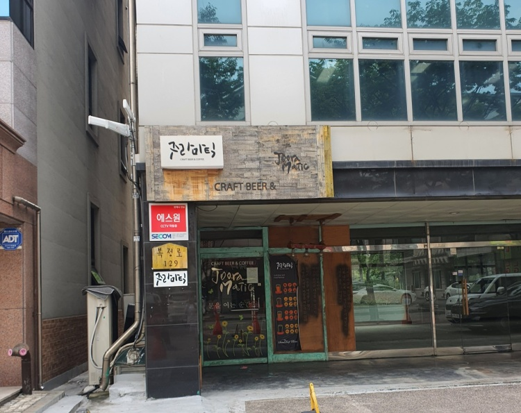
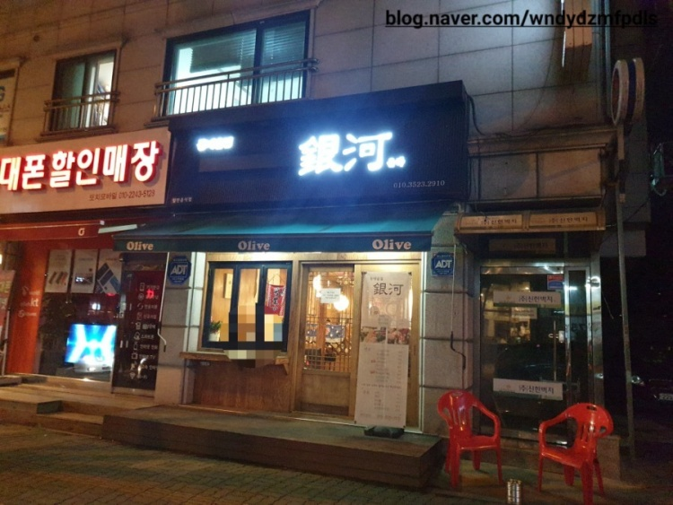
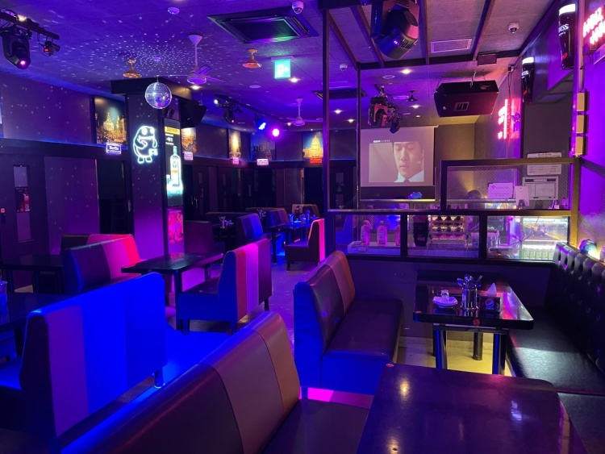
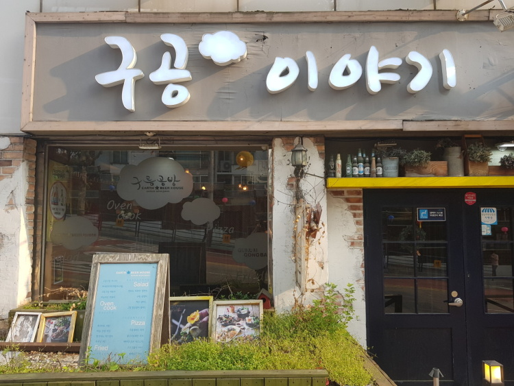
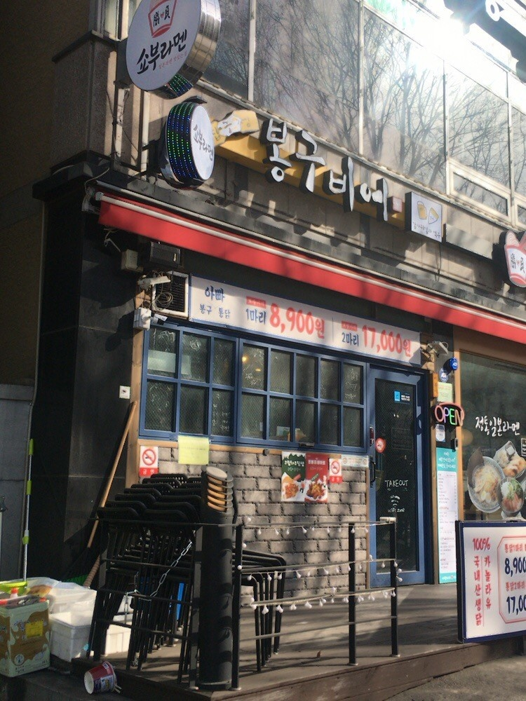
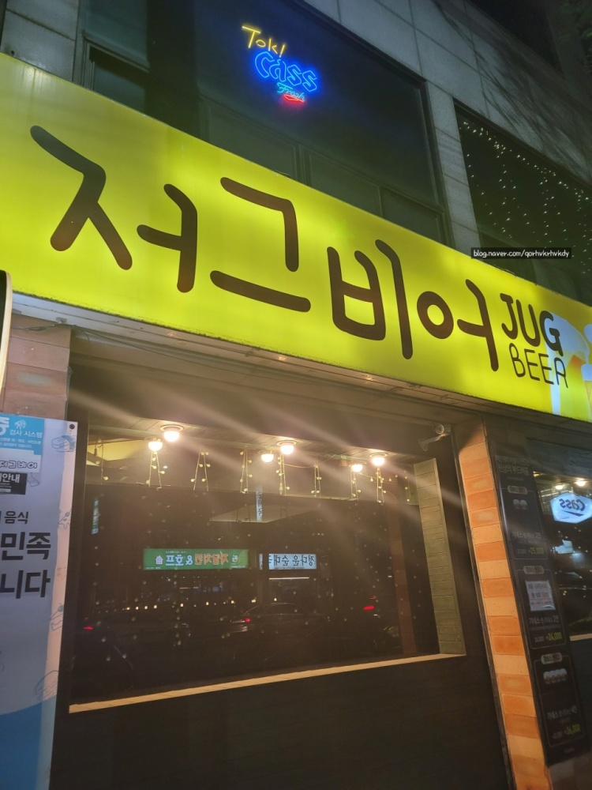
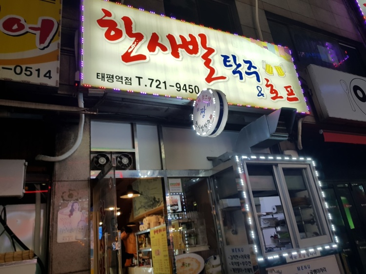

Bokjeong
Juramatic
pm 5:00~24:00

Address: 129 Bokjeong-ro, Sujeong-gu, Seongnam-si, Gyeonggi-do
Access: Line 8, 668m at Exit 2 of Bokjeong Station in Suin Bundang
A reversal grandmother beer
pm 2:00~ am 2:00

031-723-7282
Address: 61 Bokjeong-ro, Sujeong-gu, Seongnam-si, Gyeonggi-do
Business hours: Start business at 14:00 (14:00 - 02:00 AM)
Unha
pm 5:30 ~ am 1:00

Address: 116-1 Bokjeong-ro, Sujeong-gu, Seongnam-si, Gyeonggi-do
Access: Line 8, 822m from Exit 2 of Bokjeong Station in Suinbundang
Opening hours: Start at 17:30
Convenience: Group seats, parking, packaging, reservation, wireless Internet,
local currency (branch type), local currency (card type), local currency (mobile type), national support fund
Gachon university
JJungi's Pocha
pm 4:00 ~ am 4:00
010-9440-4508
Address: B1F, 3 Taepyeong-ro, Sujeong-gu, Seongnam-si, Gyeonggi-do
Access: 103m from Exit 2 of Gachon University Station per person
Address: Gacheon University Station Exit 3 is a 30-second walk uphill
Opening hours: Start at 16:00
Convenience: Group seats, parking, packaging, wireless Internet, men's and women's toilets.
Home page: http://instagram.com/jjung.po
introduce: Hello It's Jjung's Pocha!
Get all the news from Jjung's Pocha
Prepare a variety of vodka
12 private rooms for 20 people
Individual Bluetooth speakers, air conditioning in each room
Exciting and enjoyable event large hall 30 tables are available.
Small hall 15 tables for quiet conversation
Gachon University Station Exit 3 1 minute away
It's a cart bar where you can enjoy all kinds of atmosphere
Googong story
pm 5:00 ~ am 1:00
0507-1387-5249
Address: Room 102, 1/F, Taepyeong-ro, Sujeong-gu, Seongnam-si, Gyeonggi-do
Access: From Gachon University Station Exit 3~ 120m to Bongguksa Temple! Across from Gachon University Ssangyong Sweet Home Apartment
Opening hours: Start at 17:00
Convenience: parking, packaging, reservation, wireless Internet,
local currency (branch type), local currency (card type), local currency (mobile type), national subsidy
Home page: http://blog.naver.com/cloudworkshop
introduce
☆ Emotional Gallery Pub ☆
There's a person. There's a story... Delicious bar!
A big chunk. as if the clouds were coloring the blue
Story flowers springing up along the rich beer bubble.
Goo Gong... (Cloud Workshop) Story!!!
Follow the clouds of beer foam~
a forgotten childhood and dream Let's begin the story of romance.
The second story of Elmio
pm 4:00 ~ am 3:00

0507-1359-5601
Address: B101, Ilseong Office One, 1330 Seongnam-daero, Sujeong-gu, Seongnam-si, Gyeonggi-do
Access: 7m from Exit 2 of Gachon University Station
Opening hours: 16:00
Taepyeong
Bongu Beer
pm 4:00 ~ am 3:00

031-721-2677
Address: 1218 Seongnam-daero, Sujeong-gu, Seongnam-si, Gyeonggi-do
Access: 101m from Exit 4 of Taepyeong Station, Suinbundang
Go straight 50 meters from Exit 4 of Taepyeong Station
Opening hours: 09:00
Convenience: Parking, packaging, reservation, wireless Internet, men's and women's toilets.
Yogiyo, you can order from Baedal Minjok!
Zergbeer
pm 5:00 ~ 24:00

031-721-3640
Address: 41 Sujeong-ro, Sujeong-gu, Seongnam-si, Gyeonggi-do
Access: 248m from Exit 6 of Taepyeong Station
300m towards Tancheon, Exit 6 of Taepyeong Station on Seongnam Bundang Line.
Opening hours: 17:00 Start
Convenience: National Support Fund
Description: Frozen products are not used, so you can enjoy the taste of beer by thoroughly managing delicious snacks and draft beer.
Hansabarclay
pm 4:00 ~ 1:00

031-721-9450
Address: 1222 Seongnam-daero, Sujeong-gu, Seongnam-si, Gyeonggi-do
Access: 83m from Exit 4 of Taepyeong Station, Suinbundang
Convenience: National Support Fund